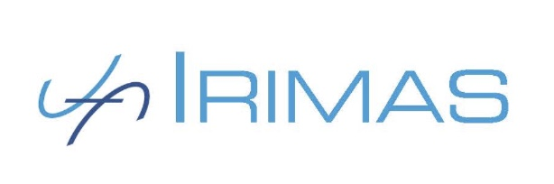

TERMINUS
Domain Foundation for
Time Series Classification
Permanent staff
Non permanent members
Alumnis
Partner Institutions

IRIMAS - Institut de Recherche en Informatique, Mathématiques, Automatique et Signal
The IRIMAS Institute gathers together all the research at University of Haute-Alsace (UHA) in Mathematics, Computer Science, Automation, and Signal and Image Processing. The local PI and project coordinator, Prof. Germain Forestier as well as Dr. Maxime Devanne, Dr. Ali Ismail-Fawaz, Prof. Jonathan Weber and Dr. Cyril Meyer will bring their expertise and knowledge in data mining and Deep Learning applied on time series analysis. Pauline Blavy has been involved in the project during her Master internship.